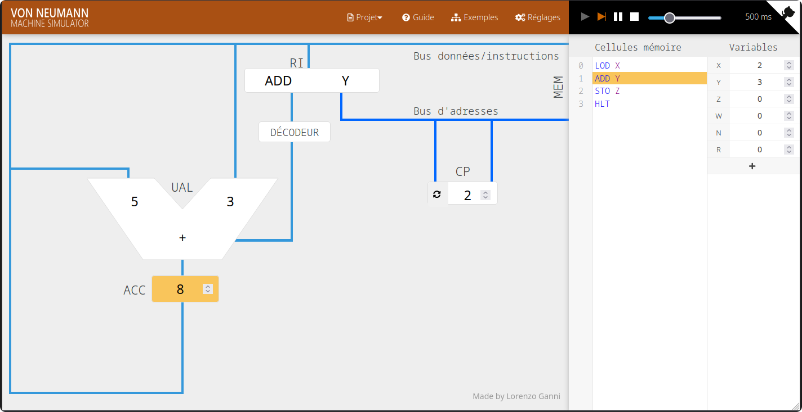
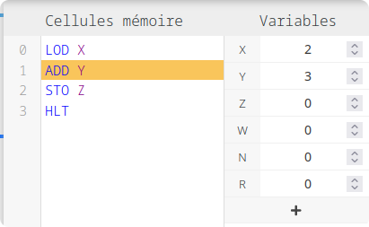
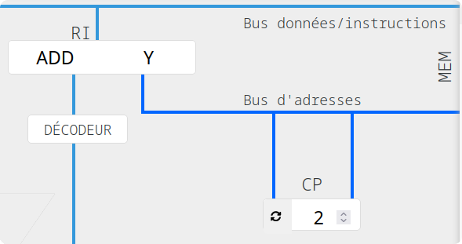
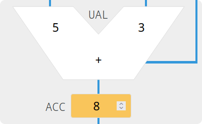

Programme Officiel
| Contenus | Capacités attendues | Commentaires |
|---|---|---|
| Modèle d’architecture séquentielle (von Neumann) | Dérouler l’exécution d’une séquence d’instructions simples du type langage machine. | Des activités débranchées sont proposées. |
Maintenant que nous avons vu quelle était la structure générale d’un ordinateur, nous allons nous intéresser plus précisément au rôle du processeur et de la mémoire(vive), et voir comment peuvent être dictées les instructions à l’unité de contrôle du processeur.

Les divers éléments de la simulation
On utilisera dans ce cours une version modifiée de la simulation de Lorenzo Gianni sous licence MIT.
Outre la RAM, le processeur ne possède qu’un très petit nombre de cases mémoires très rapides appelées des registres dont la capacité dépasse rarement quelques dizaines d’octets pour des raisons de coût et de place. Source Wikipédia
La mémoire (RAM)
La mémoire vive contient plusieurs milliards de circuits mémoires un bit, qui sont organisés en cases mémoires de huit, seize, trente-deux, soixante-quatre bits. Chaque case a une adresse unique, leur nombre détermine la capacité de la mémoire vive de l’ordinateur.

L’unité de commande (RI et CP)
L’unité de commande contient deux registres pour stocker son état d’exécution:
- Le registre d’instruction (RI) stocke l’instruction du programme provenant de la mémoire programme actuellement exécutée.
- Le compteur de programme stocke la ligne du programme actuellement exécutée, après son exécution ce compteur est incrémenté de 1 (sauf en cas de saut:
JMP).

L’unité arithmétique et logique (UAL)
L’unité arithmétique et logique est composée de transistors assemblés de façon à lui permettre de réaliser un petit nombre d’opérations simples (arithmétique: + -, logique booléenne: & | !), mais à réaliser ces opérations très rapidement.
Le résultat des opérations est stocké dans un registre appelé accumulateur (ACC).

Programmer en assembleur
Les cellules mémoire du programme sont stockées sous forme binaire, on les représente cependant sous forme textuelle. Un compilateur les convertit ensuite sous forme binaire pour les stocker dans la mémoire programme. Cette représentation textuelle est appelée le langage assembleur.
Le jeu d’instructions de notre simulateur est résumé ci-dessous.
| Accès mémoire | ||
|---|---|---|
LOAD var / LOAD #nb |
Transfère dans l’accumulateur la valeur de la variable var présente dans la mémoire ou directement le nombre nb. |
|
STORE var |
Transfère le contenu de l’accumulateur dans l’adresse mémoire associée à la variable var. |
|
Écrire un programme qui permet de stocker quatre valeurs 2, 3, 5, 7 dans les cases mémoires d’adresse 100(variable X), 101(Y), 102(Z), 103(W).
Ne pas oublier d’ajouter l’instruction HALT en fin du programme pour arrêter l’incrémentation du CP.
| Opérations arithmétiques | |
|---|---|
ADD var / ADD #nb |
Additionne au contenu de l’accumulateur la valeur de la variable var de la mémoire ou directement le nombre nb et renvoie dans l’accumulateur le résultat. |
SUB var / SUB #nb |
Soustrait au contenu de l’accumulateur la valeur de la variable var de la mémoire ou directement le nombre nb et renvoie dans l’accumulateur le résultat. |
Compléter le programme de l’application précédente pour additionner les quatre nombres contenus dans les cases mémoires X, Y, Z et W et de stocker le résultat de cette addition dans la case mémoire 104(N).
| Opération logique | ||
|---|---|---|
CMP adr / CMP #nb |
Compare le contenu de l’accumulateur à la valeur de la variable var de la mémoire ou au nombre nb et renvoie dans l’accumulateur le résultat -1,0 ou 1 selon le résultat de la comparaison: inférieur, égal ou supérieur. |
|
Compléter le programme de l’application précédente pour comparer le contenu des cases mémoires X et N et de stocker le résultat de cette comparaison dans la case mémoire 6(R).
Pour pouvoir réaliser des boucles ou sauter des lignes en fonction de conditions, on utilise des instructions de saut JMP qui permettront de se déplacer vers une ligne spécifique du programme ou vers une ligne précédée d’une étiquette inf: LOAD X ici l’étiquette est inf on peut s’y rendre avec JMP inf.
| Contrôle du programme: Conditions, boucles, commentaires… | ||
|---|---|---|
JMP étiquette / JMP n |
Transfère dans le compteur de programme CP le numéro de ligne n ou le numéro de la ligne avec l’étiquette étiquette. |
|
JMPZ étiquette / JMPZ n |
Transfère uniquement si le contenu de l’accumulateur est nul dans le compteur de programme CP le numéro de ligne n ou le numéro de la ligne avec l’étiquette étiquette. |
|
JMPN étiquette / JMPN n |
Transfère uniquement si le contenu de l’accumulateur est négatif dans le compteur de programme CP le numéro de ligne n ou le numéro de la ligne avec l’étiquette étiquette. |
|
JMPP étiquette / JMPP n |
Transfère uniquement si le contenu de l’accumulateur est positif dans le compteur de programme CP le numéro de ligne n ou le numéro de la ligne avec l’étiquette étiquette. |
|
HALT |
Stoppe l’exécution du programme. | |
// commentaire |
Ligne de commentaire non exécutée. | |
INSTRUCTION X ; commentaire de ligne |
On peut ajouter des commentaires de lignes avec un point virgule. | |
Multiplication d'entiers positifs
Stocker deux entiers positifs quelconques dans les variables X et Y, puis sans utiliser l’opérateur MUL, réaliser l’opération
et stocker le résultat dans la case mémoire 105(variable R).
Pour cela on initialisera une variable R à 0 à laquelle on ajoutera X Y fois grâce à une boucle. A chaque tour de boucle, ajouter X à R, soustraire 1 à Y tant que Y est positif grâce à un JMPP.
Multiplication d'entiers quelconques
Adapter l’algorithme précédent grâce à une condition:
- Si : reprendre l’algorithme précédent.
- Si
: soustraire
XYfois grâce à une boucle. - Si
: terminer le programme et laisser
Rà 0.
Chapitre 1: Au cœur de l’ordinateur NSI Première Hachette 2021 sous la direction de Michel Beaudouin-Lafon
Chapitre 15: L’organisation d’un ordinateur Informatique et sciences du numérique Spécialité ISN en terminale S - Avec des exercices corrigés et des idées de projets par Gilles Dowek